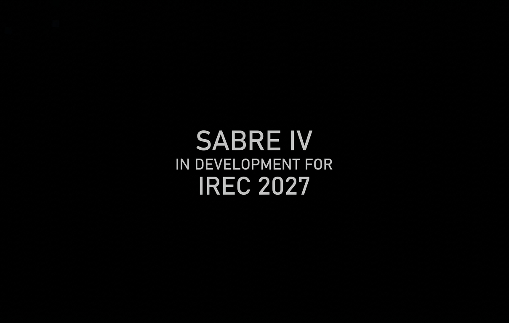
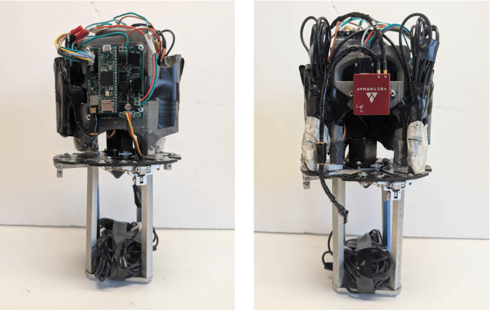
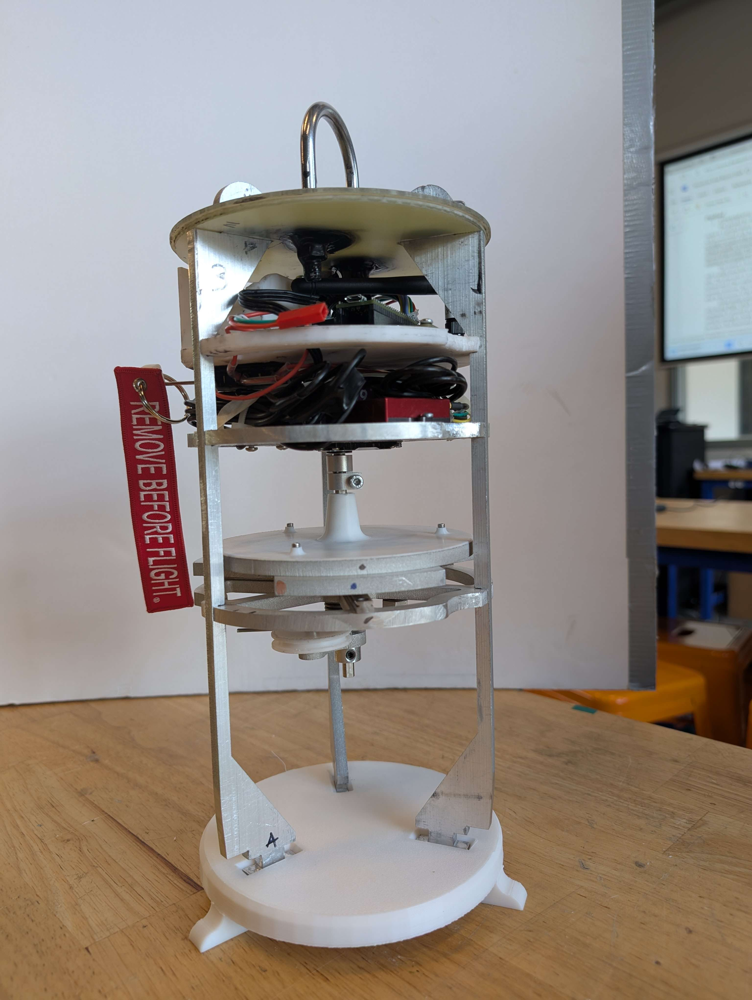
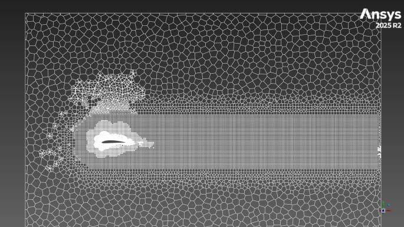
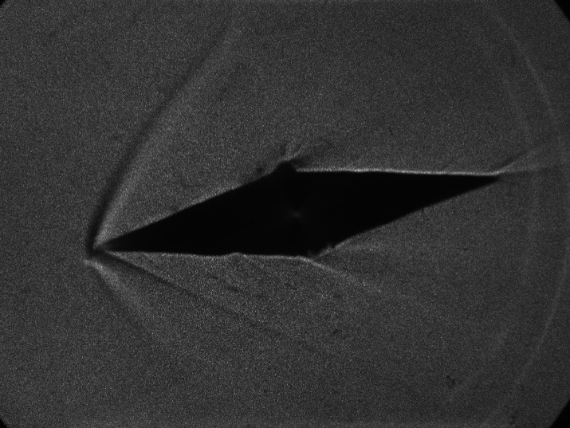
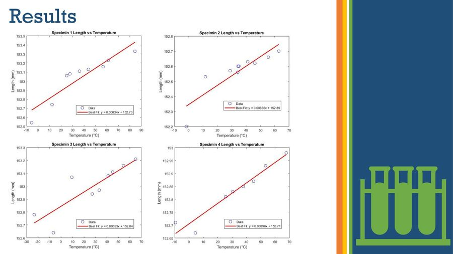
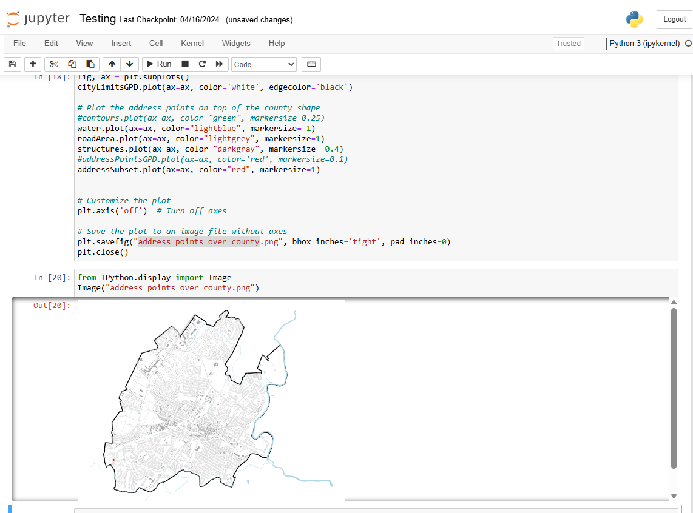
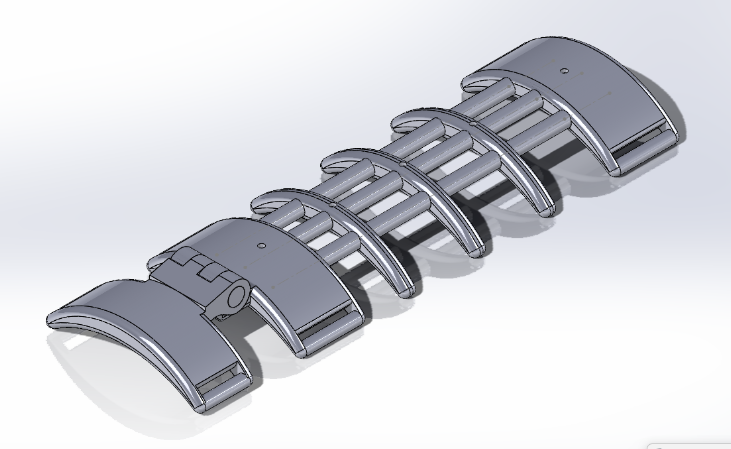

Projects

UVA Rocketry – Chief Engineer / Vice President (6/26–Present)
Directing technical execution across an 80+ member team, setting engineering standards, and mentoring student engineers through design, analysis, and testing.
Sabre IV is currently in development for IREC 2027.

UVA Rocketry – Sabre III Airbrakes Lead (2025–2026)
Returned as Airbrakes Sub-team Lead for an entirely new rocket, redesigning the active drag system around a novel winder-based deployment mechanism.
Refined onboard apogee prediction to within 10 ft of target altitude in simulation, ahead of the 2026 IREC competition.

UVA Rocketry – Airbrakes Sub-team Lead (2024-2025)
Designed key components of the airbrakes system that contributed to winning 1st Place in the 10k COTS category at IREC 2025.
Currently managing a 29-member sub-team to develop a lighter, stronger, and more cost-effective design for upcoming competitions.

Vortex Generator Geometry & Airfoil Stall Characteristics
Co-authored a wind tunnel + CFD study on vortex generator size and placement, testing 90 configurations on a modular NACA 4410 airfoil.
Found the initial size/position hypothesis disproven, and used a Kriging surrogate model to identify an optimal configuration reaching a modeled L/D of 56.99.

Supersonic Wind Tunnel Flow Characterization (5/26)
Characterized compressible flow in UVA's supersonic blowdown wind tunnel, validating blowdown models within ~11% of experimental timing.
Cross-validated Mach number across three independent methods using pressure taps, nozzle geometry, and shadowgraph shock angles.

Material Selection for AH-64 Apache Rotor Blades (12/25)
Performed ANSYS Granta analysis to select rotor blade materials against yield strength, stiffness, fatigue, and cost constraints.
Selected PEEK/IM carbon fiber composite as the optimal material via four derived merit indices.

Thermal Expansion of Aluminum
Measured the linear thermal expansion of 6061-T6 aluminum by cycling samples between dry-ice cooling and boiling-water heating.

Improving Local School Traffic (1/24–5/24)
Developed software to simulate integration with the Veracross student information system, implementing a raffle-based carpool system.
Built a Python backend to query a parent database and display optimized carpool matches on an interactive map.

Accessible Arm Brace (8/23–11/23)
Designed a SolidWorks assembly for an assistive technology project focused on improving comfort and usability compared to conventional arm braces.
3D Tetris Blocks (1/24–5/24)
Programmed a Python-based version of Tetris conforming to the official Tetris guidelines, building a simple 3D game engine by extending an existing 2D game engine.